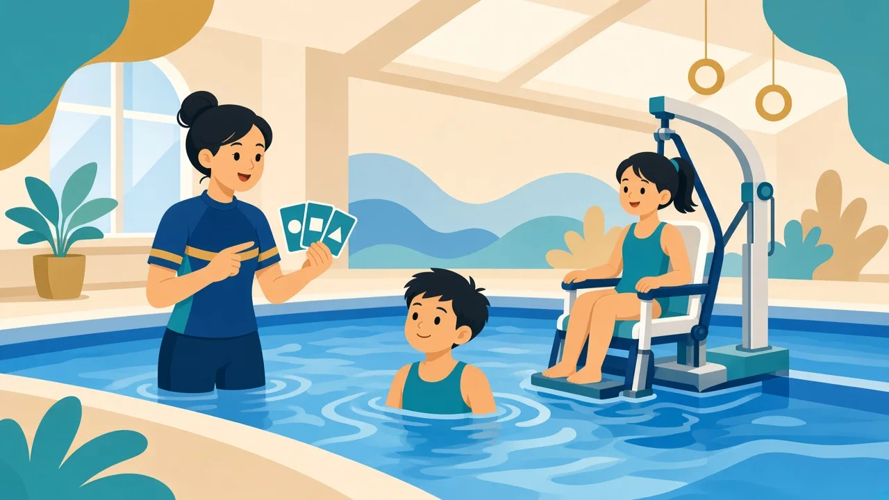
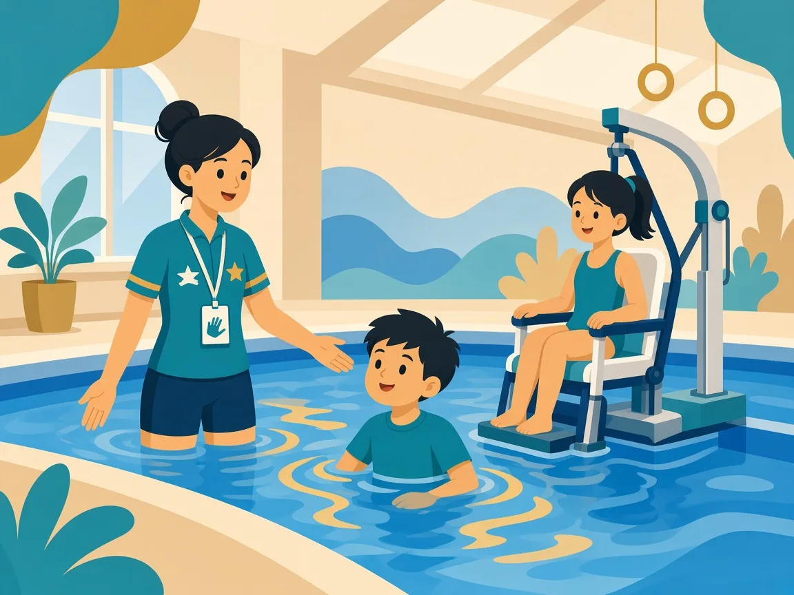

把大目標拆成小步驟，用重複與安全感建立水中能力

智力障礙（亦常稱智障）的理解，專業上通常同時看重智力功能與適應行為（溝通、社交、生活自理等），而不是單一分數。孩子可能在理解抽象指令、記憶步驟或判斷危險上需要更多時間；多重障礙則可能同時面對肢體、感官或溝通限制。游泳課宜採單一焦點：每節只強調一至兩個動作，完成即具體讚賞（說出他做到了什麼），而不是空泛的「你好叻」。

當孩子同時有多種需要（例如智力障礙＋自閉症特質），我們會先處理安全與溝通，再談泳姿。例如：先能安心浸水與求助，才練習划手；若伴隨感官過敏，先降刺激再增加動作難度。家長與學校／復康團隊的資訊，有助我們避免互相矛盾的目標。
國際與本地智障人士體育（例如 Virtus、HKSAPID 相關活動）為有潛質的運動員提供進階路徑。普及課階段不必急於分級；先享受游泳、建立規律出席，已是很大的成就。
溫馨提示：本頁為家長教育整理，供認識特殊需要與游泳教學方向參考，並非醫療診斷或治療建議。孩子個別安排請 WhatsApp 與教練商討。
以示範、觸覺引導與圖卡為主，口語保持短句。家長可提供孩子慣用的手勢或圖卡系統，課堂盡量沿用。
初期確實以適應為主。當安全感足夠，我們會逐步加入踢水、浮板前進等可量度的小目標，讓家長看到具體進展。
說出具體行為：「你今日肯坐池邊踢水，好專心。」比只說「叻」更能幫助孩子知道哪一步做得好。